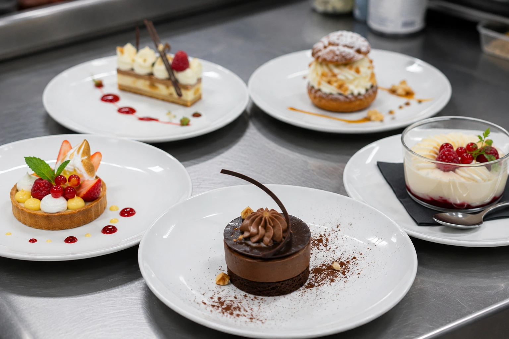
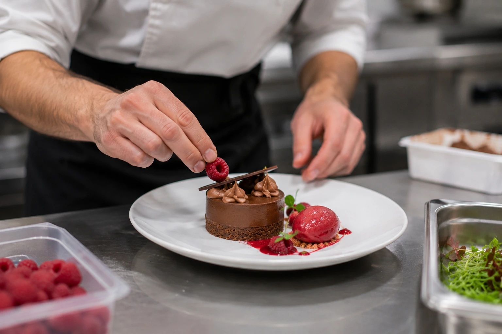

Fiches techniques pâtisserie : 3 recettes professionnelles complètes avec coût de revient et food cost
Les desserts pâtisserie offrent les meilleurs food cost de la carte — souvent 18 à 25 % — mais cette marge n'existe que si les fiches techniques sont rigoureuses. Un gramme de vanille de trop, une portion de chocolat non pesée, et la rentabilité fond aussi vite qu'un soufflé. Ce guide vous donne la méthode complète avec trois fiches techniques détaillées, chiffrées au centime et prêtes à adapter à votre carte.

Pourquoi la pâtisserie est le meilleur levier de marge de votre carte
En restauration, les desserts pâtisserie ont un avantage économique que peu de restaurateurs exploitent pleinement. Les ingrédients de base — farine, œufs, sucre, beurre, lait — coûtent entre 0,80 € et 2,50 €/kg. La transformation par le savoir-faire (cuisson, montage, dressage) crée une valeur perçue énorme pour un coût matière minimal.
Concrètement, voici ce que cela donne :
| Poste de la carte | Food cost moyen | Marge brute par assiette | Part du CA |
|---|---|---|---|
| Entrées | 22–30 % | 6–10 € | 15–25 % |
| Plats principaux | 28–35 % | 10–16 € | 45–55 % |
| Desserts pâtisserie | 18–25 % | 6–10 € | 12–20 % |
| Boissons | 15–22 % | 3–8 € | 15–25 % |
Le dessert est le seul poste qui combine un food cost inférieur à 25 % avec une marge brute en valeur absolue comparable à celle des entrées. Mais cette marge n'existe que si les fiches techniques sont rigoureuses. Sans grammages précis, les écarts les plus courants sont :
- La vanille : une gousse entière au lieu d'une demi-gousse par portion → +0,80 à 1,50 € de coût supplémentaire
- Le chocolat : 20 g de couverture en trop par moelleux → +0,30 €/portion soit +9 €/jour sur 30 couverts
- La crème liquide : sans balance, les cuisiniers versent à l'œil → écart constaté de 15 à 25 % en plus
« Sur un restaurant qui sert 80 desserts par jour à 9 € en moyenne, un food cost de 20 % au lieu de 25 % représente 36 € d'économie par jour, soit 13 000 € de marge supplémentaire par an. La fiche technique est le seul outil qui permet de tenir ce chiffre. »
Pour aller plus loin sur le calcul des coûts matière, consultez notre guide complet du food cost en restauration.
Spécificités d'une fiche technique pâtisserie vs cuisine
La pâtisserie n'est pas de la cuisine. Les fiches techniques doivent refléter des contraintes spécifiques que la cuisine salée ne connaît pas — ou pas au même degré :
| Critère | Fiche technique cuisine | Fiche technique pâtisserie |
|---|---|---|
| Précision des pesées | ± 5–10 % toléré | ± 1–2 % maximum |
| Unité de mesure | Grammes (parfois « une poignée ») | Grammes strictement (jamais d'approximation) |
| Températures | Feu doux / moyen / vif | Degrés précis (82 °C pour une crème anglaise) |
| Sous-recettes | Rarement (sauces, fonds) | Systématiquement (pâte + crème + garniture + glaçage) |
| Temps de repos | Optionnels | Critiques (min. 2 h pour une pâte sablée, 12 h pour une crème brûlée) |
| DLC des composants | 2–5 jours | 24 h à 72 h (crèmes, mousses) |
| Rendement après cuisson | Perte de poids (évaporation) | Gain ou perte variable (levée des pâtes, réduction des crèmes) |
Règle fondamentale : en pâtisserie, chaque composant d'un dessert doit avoir sa propre fiche technique (la pâte, la crème, la garniture, le glaçage), puis une fiche technique d'assemblage qui référence les sous-recettes. C'est la seule façon de calculer précisément le coût de revient d'un dessert composé de 3 à 5 éléments. Pour la méthode complète de création d'une fiche technique, reportez-vous à notre guide fiche technique en restauration.
Les 5 préparations de base à maîtriser
Avant de détailler les recettes, rappelons les cinq préparations fondamentales de la pâtisserie de restaurant. Maîtriser ces bases (et disposer de leur fiche technique) permet de décliner des dizaines de desserts :
| Préparation de base | Desserts déclinés | Coût matière / kg | DLC (0–4 °C) | Congélation |
|---|---|---|---|---|
| Pâte sablée / sucrée | Tartes, tartelettes, fonds | 2,80–3,50 € | 3 jours (crue) / 5 jours (cuite) | ✔ 3 mois |
| Crème pâtissière | Mille-feuille, éclair, Paris-Brest, tarte | 2,20–3,00 € | 72 h maximum | ✘ |
| Ganache chocolat | Tartes, truffes, macarons, entremets | 8,50–14,00 € | 5 jours | ✔ 1 mois |
| Meringue (française / italienne) | Pavlova, tarte citron, décor | 1,80–2,50 € | 24 h (italienne) / 7 jours (cuite) | ✘ (italienne) |
| Appareil à crème prise | Crème brûlée, flan, quiche sucrée | 3,00–4,50 € | 72 h (cuit) | ✘ |
Chaque préparation de base peut être réalisée en avance et stockée dans les limites indiquées. C'est la clé d'une organisation efficace au poste pâtisserie — et d'un service fluide même avec un seul cuisinier au dessert.
Fiche technique n°1 : Crème brûlée à la vanille de Madagascar
La crème brûlée est le dessert le plus rentable d'une carte de restaurant : coût matière très faible, préparation en avance, zéro perte, et une popularité qui ne faiblit jamais. C'est aussi un excellent exercice de fiche technique, car la précision des pesées impacte directement la texture.
| Ingrédient | Qté nette | Rendement | Qté brute | Prix/kg | Coût |
|---|---|---|---|---|---|
| Crème liquide 35 % MG | 750 ml | 100 % | 750 ml | 4,20 €/L | 3,15 € |
| Lait entier | 250 ml | 100 % | 250 ml | 1,10 €/L | 0,28 € |
| Jaunes d'œufs | 160 g (8 jaunes) | 100 % | 160 g | 5,80 €/kg | 0,93 € |
| Sucre semoule | 120 g | 100 % | 120 g | 1,10 €/kg | 0,13 € |
| Gousse de vanille Madagascar | 2 gousses | 100 % | 2 gousses | 3,50 €/gousse | 7,00 € |
| Cassonade (caramelélisation) | 80 g | 100 % | 80 g | 2,40 €/kg | 0,19 € |
| Coût total (10 portions) | 11,68 € | ||||
| Coût par portion | 1,17 € | ||||
Mode opératoire
- Fendre les gousses de vanille en deux, gratter les graines. Infuser gousses et graines dans le mélange crème + lait porté à frémissement (85 °C). Couvrir d'un film, laisser infuser 30 minutes minimum.
- Fouetter les jaunes avec le sucre jusqu'à blanchiment (2 min, pas plus : éviter d'incorporer trop d'air).
- Verser le lait/crème infusé en filet sur les jaunes, mélanger délicatement. Chinoiser pour retirer les gousses. Débuller la surface.
- Répartir dans les ramequins (110–120 ml par ramequin). Cuire au bain-marie à 110 °C pendant 45–50 min (la crème doit trembler au centre).
- Refroidir 30 min à température ambiante, puis filmer et réserver au froid (0–4 °C) pendant minimum 4 heures, idéalement une nuit.
- Au moment du service : saupoudrer 8 g de cassonade, caraméliser au chalumeau.
| Indicateur | Valeur |
|---|---|
| Coût matière / portion | 1,17 € |
| Prix de vente suggéré HT | 9,00 € |
| Food cost | 13,0 % |
| Marge brute / portion | 7,83 € |
| Temps de préparation | 15 min + 50 min cuisson + 4 h repos |
| DLC | 72 h (0–4 °C), non caramelélisée |
| Congélation | Non recommandée |
| Allergènes | Lait, œufs |
Fiche technique n°2 : Tarte au citron meringuée
La tarte au citron meringuée est un classique qui combine trois sous-recettes — pâte sucrée, crème citron (lemon curd) et meringue italienne. C'est l'exemple parfait d'un dessert dont le coût de revient ne peut être calculé correctement sans fiche technique structurée pour chaque composant.
Sous-recette A : Pâte sucrée (1 fond de tarte ø 24 cm — 8 parts)
| Ingrédient | Qté nette | Prix/kg | Coût |
|---|---|---|---|
| Farine T55 | 250 g | 0,90 € | 0,23 € |
| Beurre doux 82 % MG | 125 g | 8,50 € | 1,06 € |
| Sucre glace | 100 g | 2,20 € | 0,22 € |
| Œuf entier | 50 g (1 œuf) | 4,20 € | 0,21 € |
| Poudre d'amandes | 30 g | 12,00 € | 0,36 € |
| Sel fin | 2 g | — | — |
| Coût fond de tarte | 2,08 € | ||
| Coût par part (1/8) | 0,26 € | ||
Sous-recette B : Crème citron / Lemon curd (pour 8 parts)
| Ingrédient | Qté nette | Rendement | Qté brute | Prix/kg | Coût |
|---|---|---|---|---|---|
| Jus de citron jaune | 150 ml | 38 % | 395 g (~ 5 citrons) | 2,80 € | 1,11 € |
| Zestes de citron | 8 g | 4 % | (inclus ci-dessus) | — | — |
| Œufs entiers | 150 g (3 œufs) | 100 % | 150 g | 4,20 € | 0,63 € |
| Sucre semoule | 150 g | 100 % | 150 g | 1,10 € | 0,17 € |
| Beurre doux | 120 g | 100 % | 120 g | 8,50 € | 1,02 € |
| Coût crème citron | 2,93 € | ||||
| Coût par part (1/8) | 0,37 € | ||||
Sous-recette C : Meringue italienne (pour 8 parts)
| Ingrédient | Qté nette | Prix/kg | Coût |
|---|---|---|---|
| Blancs d'œufs | 90 g (3 blancs) | 3,80 € | 0,34 € |
| Sucre semoule | 180 g | 1,10 € | 0,20 € |
| Eau | 60 ml | — | — |
| Coût meringue | 0,54 € | ||
| Coût par part (1/8) | 0,07 € | ||
Synthèse économique — Tarte citron meringuée (1 part)
| Composant | Coût / part |
|---|---|
| Pâte sucrée | 0,26 € |
| Crème citron | 0,37 € |
| Meringue italienne | 0,07 € |
| Forfait assaisonnement/décor (2 %) | 0,01 € |
| Coût total par part | 0,71 € |
| Prix de vente suggéré HT | 8,50 € |
| Food cost | 8,4 % |
| Marge brute / part | 7,79 € |
Mode opératoire
- Pâte sucrée : crémer le beurre + sucre glace, ajouter l'œuf, puis farine + poudre d'amandes + sel. Fraser, filmer, réserver 2 h minimum au froid. Abaisser à 3 mm, foncer le cercle, piquer, cuire à blanc à 170 °C pendant 18–20 min.
- Crème citron : fouetter œufs + sucre, ajouter jus + zestes, cuire à feu moyen en remuant jusqu'à 82–85 °C (la crème nappe la spatule). Retirer du feu, ajouter le beurre en morceaux, mixer au mixeur plongeant. Verser sur le fond de tarte pré-cuit, lisser, réserver 4 h au froid.
- Meringue italienne : cuire le sucre + eau à 121 °C (boulé souple). Monter les blancs en neige, verser le sirop en filet, fouetter jusqu'à refroidissement complet (25–30 °C).
- Montage : pocher la meringue sur la crème citron, torcher au chalumeau. Servir dans l'heure (la meringue ne tient pas longtemps).
Fiche technique n°3 : Moelleux au chocolat cœur coulant
Le moelleux au chocolat cœur coulant est le dessert signature par excellence : spectaculaire à l'assiette, rapide à cuire (à la commande ou en fin de service), et économiquement très performant. Son avantage majeur : l'appareil cru se congèle parfaitement, ce qui permet une production batch en avance.
| Ingrédient | Qté nette | Prix/kg | Coût |
|---|---|---|---|
| Chocolat noir 70 % (couverture) | 250 g | 14,00 € | 3,50 € |
| Beurre doux 82 % MG | 200 g | 8,50 € | 1,70 € |
| Œufs entiers | 250 g (5 œufs) | 4,20 € | 1,05 € |
| Jaunes d'œufs | 60 g (3 jaunes) | 5,80 € | 0,35 € |
| Sucre semoule | 150 g | 1,10 € | 0,17 € |
| Farine T55 | 80 g | 0,90 € | 0,07 € |
| Cacao en poudre (moules) | 10 g | 18,00 € | 0,18 € |
| Fleur de sel | 2 g | — | — |
| Coût total (10 portions) | 7,02 € | ||
| Coût par portion | 0,70 € | ||
Mode opératoire
- Fondre le chocolat + beurre au bain-marie ou au micro-ondes par impulsions de 30 s, mélanger jusqu'à homogénéité. Température cible : 45–50 °C.
- Fouetter les œufs entiers + jaunes + sucre au ruban (blanchi et doublé de volume, environ 4 min).
- Incorporer le mélange chocolat/beurre aux œufs, puis ajouter la farine tamisée en mélangeant délicatement à la maryse (ne pas trop travailler la pâte).
- Beurrer et cacao-ter les moules individuels. Répartir 90–95 g d'appareil par moule. Filmer et réserver au froid ou au congélateur.
- Cuire au four professionnel à 220 °C pendant 8–9 min (depuis le froid) ou 12–13 min (depuis le congélateur). Le dessus doit être ferme, le cœur tremblant.
- Démouler immédiatement, dresser avec une boule de glace vanille et un trait de coulis.
| Indicateur | Valeur |
|---|---|
| Coût matière / portion (sans accompagnement) | 0,70 € |
| Coût avec glace vanille + coulis | 1,15 € |
| Prix de vente suggéré HT | 10,00 € |
| Food cost (avec accompagnement) | 11,5 % |
| Marge brute / portion | 8,85 € |
| Temps de préparation | 20 min + 9 min cuisson |
| DLC (appareil cru, réfrigéré) | 48 h (0–4 °C) |
| Congélation (appareil cru, moulé) | ✔ 1 mois à -18 °C |
| Allergènes | Œufs, lait, gluten, fruits à coque (traces) |

Coûts matière et pricing des desserts pâtisserie
Le coefficient multiplicateur en pâtisserie de restaurant est le plus élevé de toute la carte — et c'est justifié par le savoir-faire, le temps de préparation et la valeur perçue du dressage à l'assiette.
| Type de dessert | Coût matière moyen | Coefficient | PV HT suggéré | Food cost |
|---|---|---|---|---|
| Crème brûlée / panna cotta | 0,80–1,20 € | × 7 à 10 | 8–10 € | 10–15 % |
| Tarte (citron, fruits, chocolat) | 0,60–1,00 € | × 8 à 12 | 7–10 € | 7–14 % |
| Moelleux / fondant chocolat | 0,70–1,20 € | × 7 à 10 | 9–12 € | 10–14 % |
| Entremets / dessert monté | 1,50–2,50 € | × 4 à 6 | 10–14 € | 15–25 % |
| Soufflé (chaud, à la commande) | 0,60–0,90 € | × 10 à 15 | 10–14 € | 6–10 % |
| Assiette de desserts | 1,80–3,00 € | × 4 à 5 | 12–16 € | 18–25 % |
Règle de pricing : ne jamais fixer le prix d'un dessert uniquement sur le coût matière. La valeur perçue compte autant : un soufflé au Grand Marnier coûte moins cher qu'une assiette de desserts, mais le spectacle de la réalisation à la commande justifie un prix supérieur. Pour une approche complète du pricing, consultez notre guide sur les ratios de rentabilité en restauration.
Comparatif des 3 fiches techniques
| Dessert | Coût / part | PV HT | Food cost | Marge brute | Préparation avance | Congélation |
|---|---|---|---|---|---|---|
| Crème brûlée vanille | 1,17 € | 9,00 € | 13,0 % | 7,83 € | ✔ J-1 | ✘ |
| Tarte citron meringuée | 0,71 € | 8,50 € | 8,4 % | 7,79 € | ✔ J-1 (sans meringue) | ✔ (fond seul) |
| Moelleux chocolat coulant | 1,15 €* | 10,00 € | 11,5 % | 8,85 € | ✔ batch | ✔ 1 mois |
* Avec accompagnement (glace vanille + coulis).
Gestion des stocks et DLC en pâtisserie
La pâtisserie génère peu de pertes si les DLC sont maîtrisées — mais un dérapage sur un seul composant (crème pâtissière oubliée, mousse non étiquetée) peut entraîner la mise au rebut de lots entiers. Voici les règles de stock à intégrer dans chaque fiche technique :
| Préparation | DLC réfrigérateur | DLC congélateur (-18 °C) | Signal d'alerte |
|---|---|---|---|
| Crème pâtissière | 72 h | Non recommandé | Odeur aigre, texture granuleuse |
| Crème anglaise | 48 h | Non recommandé | Odeur aigre, décoloration |
| Lemon curd / crème citron | 72 h | 1 mois | Désynthèse (eau en surface) |
| Ganache | 5 jours | 1 mois | Blanchiment, moisissure |
| Meringue italienne | 24 h | Non recommandé | Retombée, suintement |
| Pâte crue (sablée/sucrée) | 3 jours | 3 mois | Dessechement, craquelures |
| Fond de tarte cuit | 5 jours | 3 mois | Ramollissement |
| Appareil moelleux chocolat cru | 48 h | 1 mois | Désynthèse |
| Génoise / biscuit cuit | 5 jours | 2 mois | Dessèchement, moisissure |
Règle de base : chaque bac, boîte ou film doit porter une étiquette avec le nom de la préparation, la date et l'heure de fabrication, et la DLC. Sans étiquetage = mise au rebut systématique lors du contrôle sanitaire.
HACCP et points critiques en pâtisserie
La pâtisserie concentre plusieurs risques HACCP spécifiques liés à l'utilisation massive d'œufs, de crème et de produits laitiers. Voici les CCP (points critiques de contrôle) à documenter dans les fiches techniques :
| Point critique | Risque | Mesure préventive | Limite critique |
|---|---|---|---|
| Réception œufs | Salmonella | Contrôle DLC, température, intégrité coquilles | T° < 20 °C, DLC J+21 min. |
| Cuisson crème anglaise | Survie bactérienne | Thermomètre à sonde dans la crème | ≥ 82 °C à cœur |
| Refroidissement rapide | Prolifération (zone 10–63 °C) | Cellule de refroidissement | < 10 °C en < 2 h |
| Stockage crèmes | Prolifération | Chambre froide positive, étiquetage DLC | 0–4 °C, DLC respectée |
| Congélation | Rupture chaîne du froid | Cellule à -18 °C minimum, étiquetage date | ≤ -18 °C constant |
| Allergènes | Réaction allergique | Fiche technique avec allergènes, séparation des ustensiles | 14 allergènes réglementaires |
Chaque fiche technique doit mentionner les allergènes présents dans le dessert (règlement UE 1169/2011). En pâtisserie, les allergènes les plus fréquents sont : gluten, œufs, lait, fruits à coque (amandes, noisettes), et soja (lécithine dans le chocolat). Pour les règles complètes, consultez notre guide PMS.
FAQ — Fiches techniques pâtisserie
Quel food cost viser pour les desserts pâtisserie ?
Le food cost cible pour les desserts se situe entre 18 % et 28 % du prix de vente HT. Les desserts simples (crème brûlée, panna cotta) visent 10–15 %, les desserts classiques (tartes, moelleux) 8–15 %, et les desserts premium avec produits nobles 20–28 %. La pâtisserie offre généralement les meilleurs food cost de la carte car les ingrédients de base sont peu coûteux et la transformation ajoute une forte valeur perçue.
Comment calculer le coût de revient d'un dessert pâtisserie ?
En 4 étapes : 1) Lister tous les ingrédients avec leur quantité nette par portion, 2) Appliquer le ratio de rendement pour obtenir la quantité brute (ex : 200 ml de jus de citron nécessite 530 g de citrons bruts à 38 % de rendement), 3) Multiplier chaque quantité brute par le prix unitaire au kilo, 4) Additionner et ajouter un forfait de 1–2 % pour l'assaisonnement et le décor. Pour un calcul détaillé, utilisez notre calculateur food cost gratuit.
Quelle différence entre pâtisserie de restaurant et pâtisserie de boutique ?
La pâtisserie de restaurant (desserts à l'assiette) se distingue par : des portions individuelles dressées à la minute ou pré-dressées, la possibilité de textures chaudes (soufflé, moelleux coulant), un coefficient multiplicateur plus élevé (×4 à ×12 contre ×2,5 à ×3,5 en boutique), et une présentation pensée pour l'assiette. Les contraintes HACCP sont identiques.
Combien de desserts proposer sur une carte de restaurant ?
Un bistrot : 4 à 6 desserts. Une brasserie : 5 à 8. Un restaurant gastronomique : 5 à 7 (+ menu dégustation). Au minimum, proposez un dessert chocolat, un dessert fruité, un dessert crémeux/lacté et un dessert « léger » (sorbet, salade de fruits). Au moins 2 desserts doivent être préparables en avance (crème brûlée, tarte, moelleux congelé).
Quels sont les rendements des ingrédients courants en pâtisserie ?
Rendements clés : œufs entiers 100 % (en coquille : 90 %), blancs 33 % du poids total, jaunes 17 %. Citrons (jus) 35–40 %, oranges (jus) 40–45 %, zeste 3–5 %. Chocolat de couverture temperé 95 %. Fruits : fraises 92 %, framboises 95 %, mangue 55 %, passion 30 %. Pâte feuilletée cuite 85 %. Intégrer ces ratios dans la fiche technique est essentiel pour un coût de revient juste.
Comment gérer les DLC en pâtisserie de restaurant ?
Trois règles : 1) Préparations à base d'œufs peu cuits = 48–72 h maximum au froid (0–4 °C). 2) Pâtes cuites = 3–5 jours au froid, 3 mois au congélateur. 3) Crèmes cuites = 72 h maximum. Chaque bac doit porter une étiquette avec nom, date de fabrication et DLC. Sans étiquetage = rebut lors du contrôle sanitaire.
Peut-on congeler les desserts pâtisserie en restaurant ?
Oui, et c'est même recommandé pour lisser la production. Se congèlent bien : fonds de tarte (3 mois), génoises (2 mois), ganaches (1 mois), moelleux crus moulés (1 mois), sorbets/glaces. Ne se congèlent pas : crème pâtissière, meringue française, fruits frais en garniture, mousses gélatinées. La congélation doit respecter la chaîne du froid : descente rapide à -18 °C en cellule.